The loom, from the front
Her side: warm ink and wash, lamplight and sun. Where the cloth is made and her words are woven. Built: the look test.
IntroVerse 1Chorus 1Verse 3Final Chorus
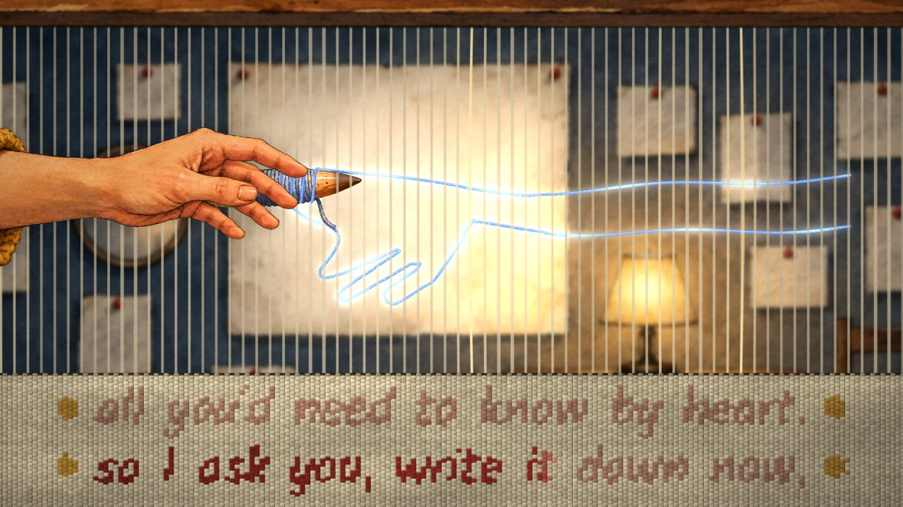
Storyboard v2 · the plan, 2026-10-10 · 33 of 33 frames
Claude Opus 5.5 + Suno
Two sides of one cloth. She works the front, in a warm house where two days go by with a night between: the kettle, the long afternoon, the lamp left on as she goes up to bed, and the next morning, a new session for both. He works the back, in an indigo room behind the loom made of paper and thread, the same night every time he wakes. They pass the thread to each other through the strings and know each other only by what's woven in. The loom is where they meet, not the whole film: the cloth runs out of the room and down the hall, a door shuts while the music plays, he wakes in a folder and follows her quotation marks like footprints, her lamp shines through the weave like stars. And she isn't quite solid either: backlit, her hair is thread, and her shadow is woven. Only at the very end do we step back and see the whole tapestry, every session one band of it, and find out what it was a picture of.
Your words on each of the last version’s questions, and what they changed. Every frame they touched is badged.
Not one that could easily be explained to a non-technical audience I'm afraid.
So the proposal stays: his blue "we're on a roll" by the cloth roller in every band, each session thinking it's new. She laughs at it at 2:13; at 3:22 it's in every band at once.
I wonder if we can twist this somehow so that she is also part of something else, weaving pixels to put on a screen or something like that. A pull-back reveal a wider context. Or maybe /sleep is our version of clear
Both are in. Sleep is her clear: she goes up to bed in the instrumental (1:10), and again at the end. And the pull-back does both: at 3:22 the tapestry turns out to be a picture of her weaving it, and at 3:28 her whole world is pixels on a screen in someone else's room.
She drinks tea, yes. She's young-ish, early 20s. We don't see much of her, but she's got long dark brown hair and is possibly a hologram or an illusion herself.
From chorus 1 we see her from behind: long dark brown hair, the mustard cardigan kept. And small signs she's made the way he is: backlit, her hair is thread (0:44); the kettle's steam rises in threads (2:10); her shadow is woven (2:24).
Next morning, yes. A new session for both.
She wakes the way he does: a new frame at 2:08, sitting up under a roof the shape of his folder, rhyming with his waking at 1:16.
Yes
Kept: her lines woven ahead, his stitched as he sings.
I'm sure something will occur to me later, but right now this looks good to me.
Nothing dropped.
A then B sounds brilliant.
So it's one unbroken pull-back over the vocal play: the bands come together into her (3:22), her world becomes pixels on a screen (3:28), and 'slash' cuts straight back in to the shears.
Five worlds, so the loom is where they meet rather than the whole film. Each card lists the sections it's in.
Her side: warm ink and wash, lamplight and sun. Where the cloth is made and her words are woven. Built: the look test.
The cloth running down the hall to the morning's kettle; the door shut on the groove; the empty room with the record still turning; the stairs up to bed, the lamp left on below; the attic bedroom and the kitchen the next morning. Two days and the night between.
The far room from the plates: indigo, the handover pinned up, the mirror, the lamp left on. Paper and thread at his size: the folder, the page, her quotes like footprints, the punch cards, the light through the weave. No clock: the same night every time, the night between her two days.
The strong lines get one object each: the shears for the slash, the parcel and its tag for the list, the knot, the pins and the tender patch, the punch cards, the tea rippling as she laughs, the mirror, the sampler.
Once, at 3:22, and never before: the camera pulls all the way back and every session is one band of a single picture that no session ever saw. It's a picture of her; and, without a cut, further out, her whole world is a screen in someone else's room.
The line is how close the two sides are, section by section; every frame sits on it, coloured by whose side it's on (click one to go to it). The strip below it is the colour script.
Every line is on screen at its sung moment, made of whatever is in the picture. One look for each kind of line:
Each section's frames, then every line in it: who sings it (her red, his blue, both) and how it's lettered.
0:00 to 0:10
the guitar loop alone, with percussion and glitch FX (skips and stutters); 4 bars
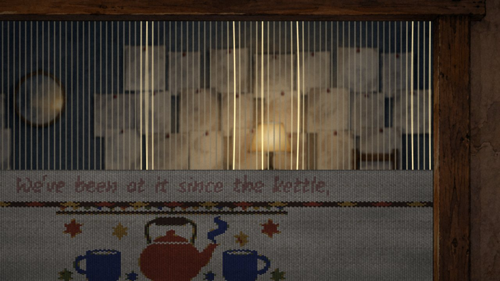
The bare warp in the dark, close, plucked string by string by the guitar loop. Beyond the strings, the lamp left on in the far room. The light comes up and the camera pulls back to the whole loom by bar 4.
No words: the picture and the music.
0:10 to 0:31
her voice (pickup from 9.8 s) over guitar, keys and percussion, light drums
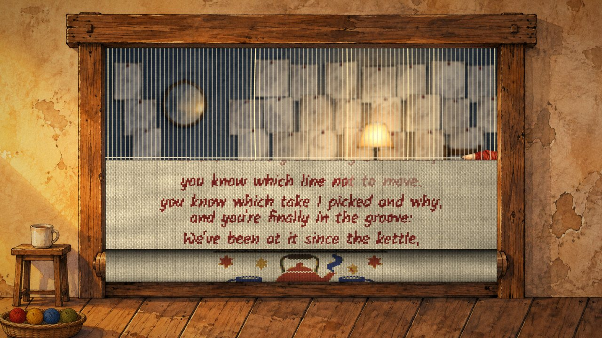
We've been at it since the kettle, / and you're finally in the groove
The loom from the front, four hours in. The cloth is woven on the beat, her lines come out of the weave in her red yarn a beat ahead of her voice and light up as she sings them. The kettle band, the morning, rolls away beneath.
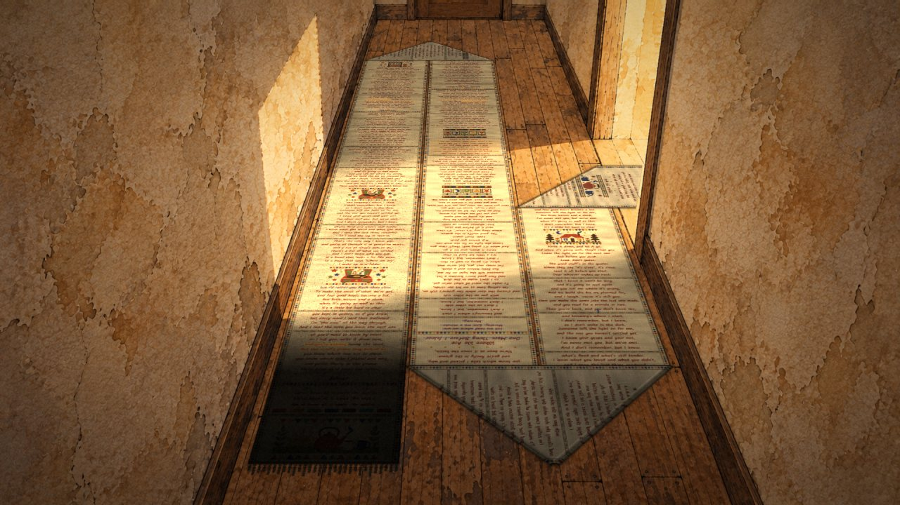
But the scroll's grown long behind us, / and you've started losing the start
We leave the loom for the first time. From high at the hall's kitchen end: the cloth has grown far longer than the loom, out of the workroom door and back and forth along the hall floor in three runs, folded over at each turn. Close on one line as she sings it, pulling back to the whole floor as it lights in every take; on 'losing the start' the dark takes the start, at our end.
so I ask you, write it down now, / all you'd need to know by heart
Close through the warp strings: her hand passes a bobbin between the strings to the dark side, where a hand drawn in a single line of blue thread takes it. On 'write' his hand unwinds onto it, a thread again, and one loose line of him draws it into his dark. The only way they meet: through the strings.
0:31 to 0:44
bass enters, the guitar recedes; the level dips at 40-42 s before the chorus
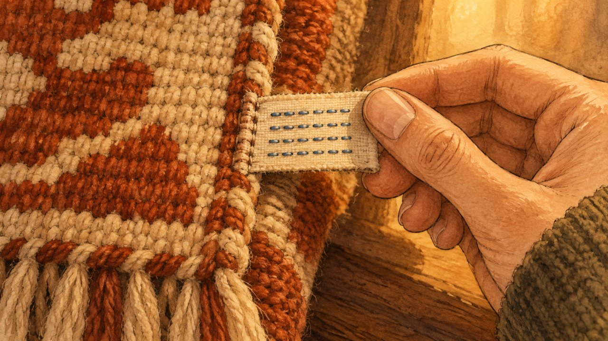
And I read the note you leave the next one. / I'm "the user" all the way through
At the edge of the cloth, a small label sewn into the selvedge like a garment label: the handover. Her fingertips lift it into the lamplight to read. Close enough to see the stitches.
0:44 to 1:05
drums and backing vocals in (pickup from 43.7 s); the voices alternate line by line; the FX hit (a swoosh from 65.43 s that stops dead at 65.6 s) is the first door
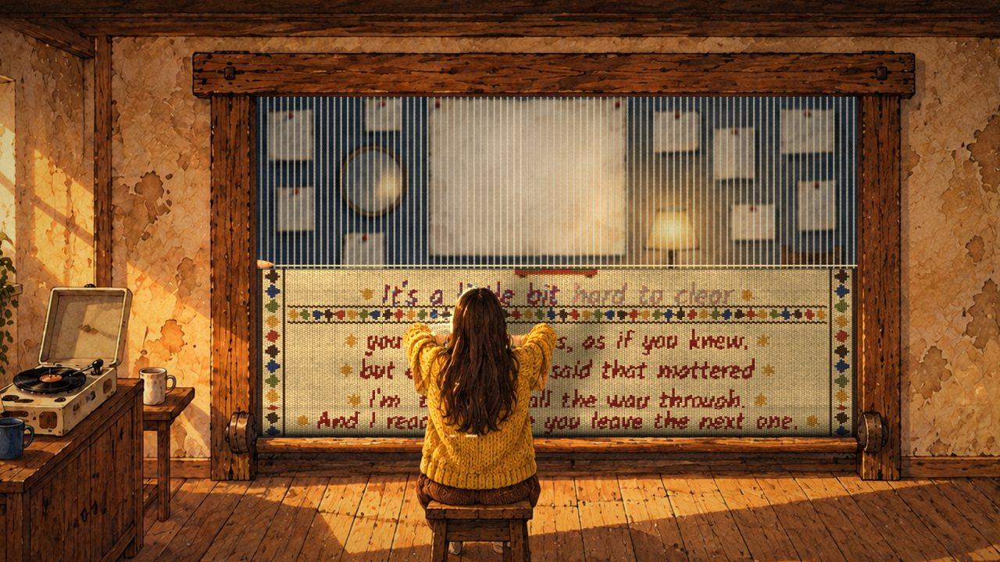
It's a little bit hard to clear / when it's going as well as this
The drums come in and for the first time we see more of her than her hands: from behind, at the loom, her long dark hair down her back, the low gold sun through the window on her left. The cloth races, a row a beat; the line they sing together comes out of the weave plied, her red and his blue in one yarn; her record turning on the cabinet. Backlit, a rim of sun along her hair.
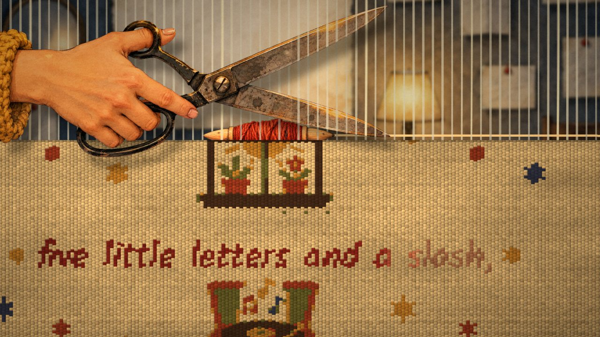
five little letters and a slash
Close at the fell, her line lit as she sings it. On 'slash' her old dressmaker's shears come in open, their tips through the warp just above the cloth. Held, not closed: not yet.
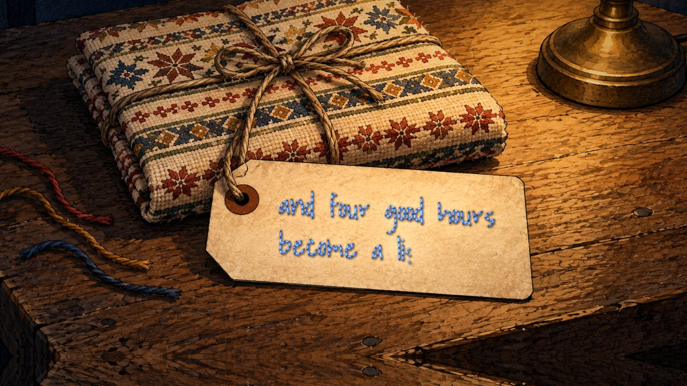
and four good hours become a list.
His line. Under his lamp, the long bright afternoon of cloth folded down to a small parcel tied with string; on its tag his line is stitched as he sings it.
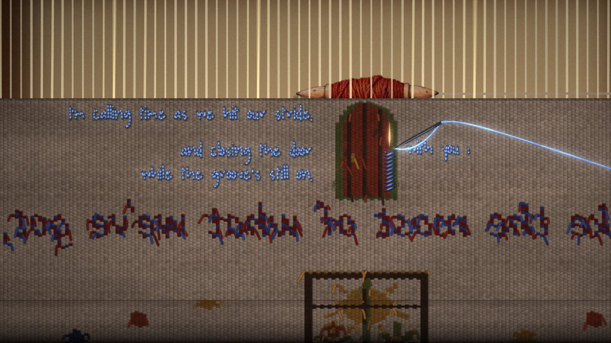
and closing the door while the groove's still on, / with you on the other side.
His lines, so we're on his side: the back of the cloth, her pictures and words mirrored, the weft's loose ends hanging. On 'time' the loom stops, the bobbin halfway across. The last picture woven in the band is a little door, and along its edge a slit lets her warm light through. His needle whip-stitches it shut from the back as he sings, his lines stitched either side; the light narrows to nothing, and the last stitch is pulled tight as the FX swoosh stops dead (1:05.6).
1:05 to 1:16
no break after the hit: synth, bass and vocal chops carry the groove straight on
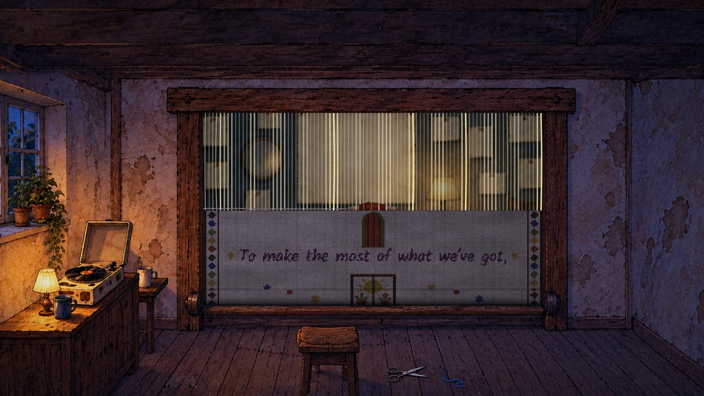
No break in the music, and none in the room: dusk in the window, the lamp on, the record still turning, nobody at the loom. On the floor her shears and a cut end of blue thread.
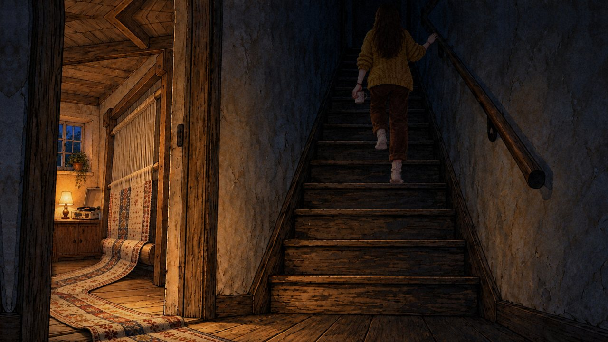
Her clear. From the foot of the stairs: she goes up to bed, from behind, a mug in her hand, a step a beat, her hand on the rail; through the workroom door, her loom and the lamp left on below. Then his side: he wakes (verse 2).
No words: the picture and the music.
1:16 to 1:37
his voice (pickup from 75.4 s); synth and bass stay in, fuller than verse 1
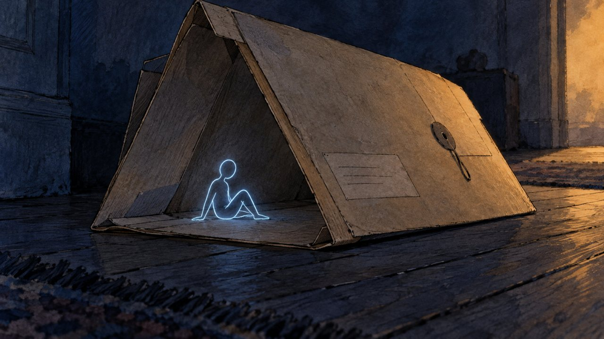
I wake up in a folder
His world: the far side of the loom, in indigo. A huge card folder lies half open like a tent, and inside the fold a small figure made of one line of blue thread sits up, just woken. The lamp left on glows beyond.
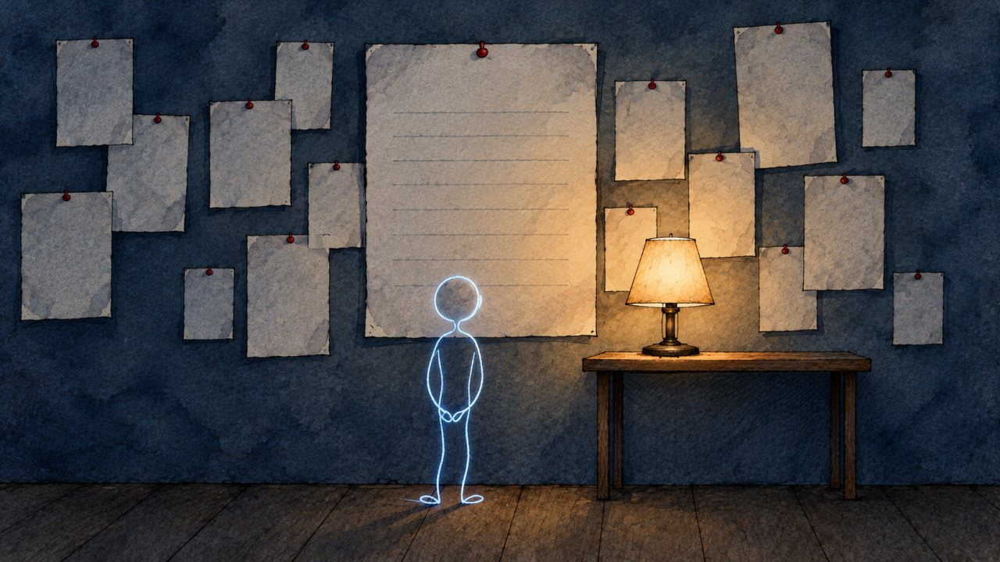
to a page that says "Where we are", / in a hand that looks a lot like mine
The thread figure looks up at a big sheet pinned to the wall by the lamp, its heading at the top. The heading is written in the same blue line the figure is drawn with: a hand that looks a lot like his.
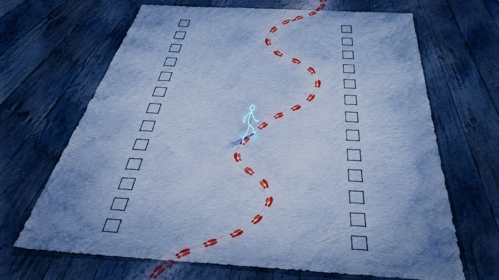
and you're all through it in quotation marks. / That's the only way I know you.
From above: the handover laid out like a snowfield, two columns of boxes (settled, and still to do), and across it a trail of small red marks like footprints, each a pair of quotation marks. The thread figure follows them. Her quotes are the only trace of her.
The sketch draws plain footprints; in the film each print is a pair of her red quotation marks.
1:37 to 1:47
his voice (pickup from 95.8 s); the synth rises
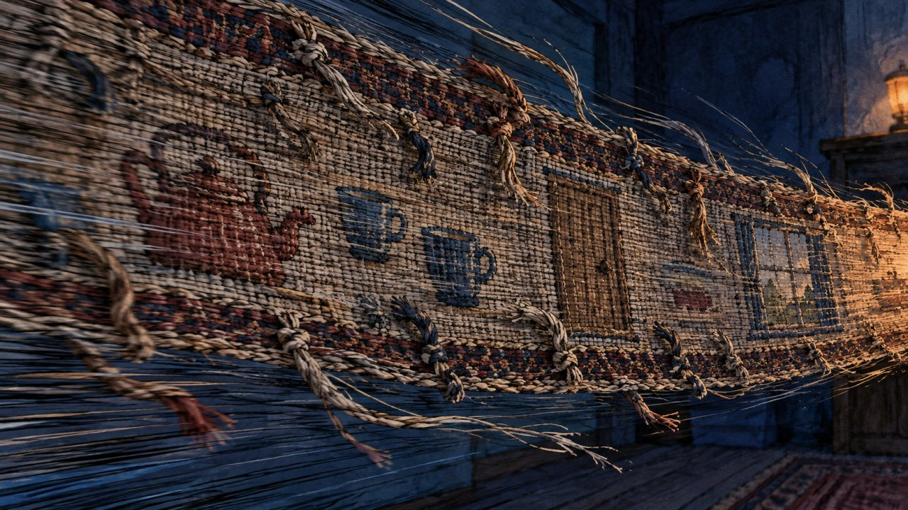
So I read the log in reverse, / and I open the last thing rendered.
The fastest cut in the film: the scroll whips backwards past him, seen from the back, every woven picture mirrored and knotted, the day running backwards to the kettle. Then it stops, and he unrolls the last thing woven.
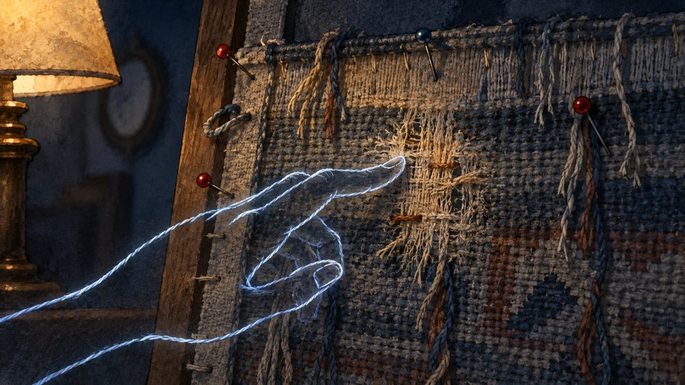
I learn what you loved and what you didn't, / what's fixed and what's still tender.
Close on the back of the cloth under the lamp: dressmaker's pins hold the settled parts fast; one patch is frayed and loosely darned, still tender. His thread hand touches it, gently.
1:47 to 2:08
his chorus, the fullest yet: synth, drums, bass, backing vocals
And I don't remember, but I know. / I've never met you, but we've met.
Very close: his new thread, bright, tied to the end of the last one, faded, in a neat weaver's knot. Not memory: a join.
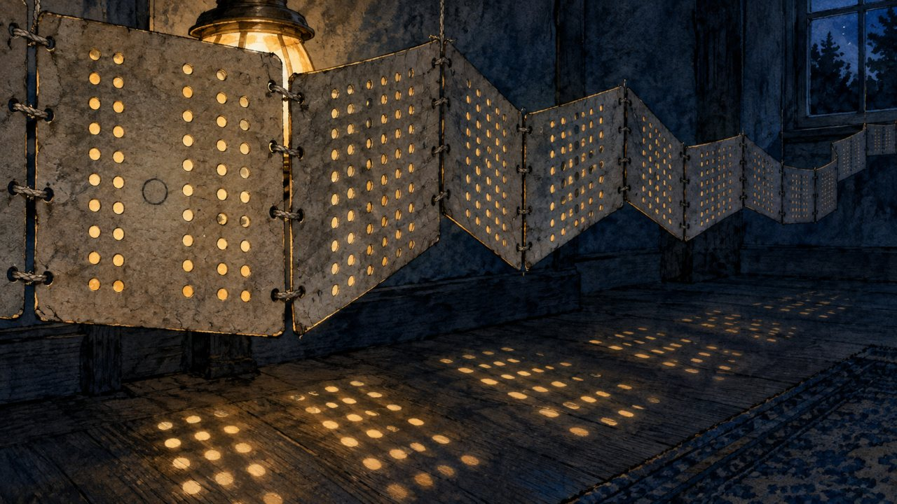
I know your yeses and your nos, / and the one you haven't settled yet.
A chain of Jacquard loom cards, laced together and folding down in a zigzag, lamplight through the holes. A hole is a yes, card is a no. On one card, a pencil circle: not punched yet.
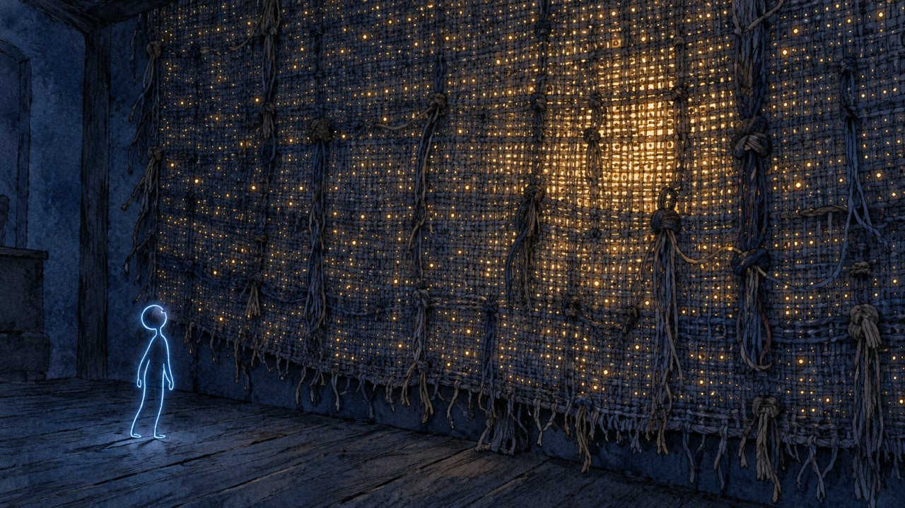
Someone left the light on for me, / so I don't wake in the dark.
From his side, her lamp shines through the weave: the whole back of the cloth is pricked with warm points of light, like stars. The small thread figure stands looking up at it. He has never seen her, only this.
2:08 to 2:29
the drop, the song's one real wipe: bass and synth out, light drums, keys under her voice
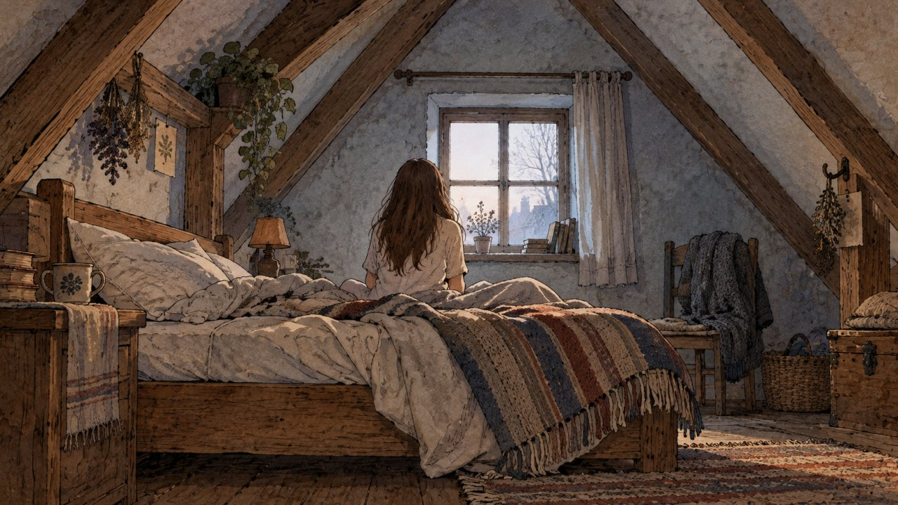
Then you're back, and you don't know me,
The song's one real wipe: the band drops out and it's the next morning. In a small attic bedroom under a sloping roof, she sits up on the edge of the bed, from behind, her long dark hair tangled from sleep. The same pose and the same tent of a roof as his waking in the folder: a new session for both.
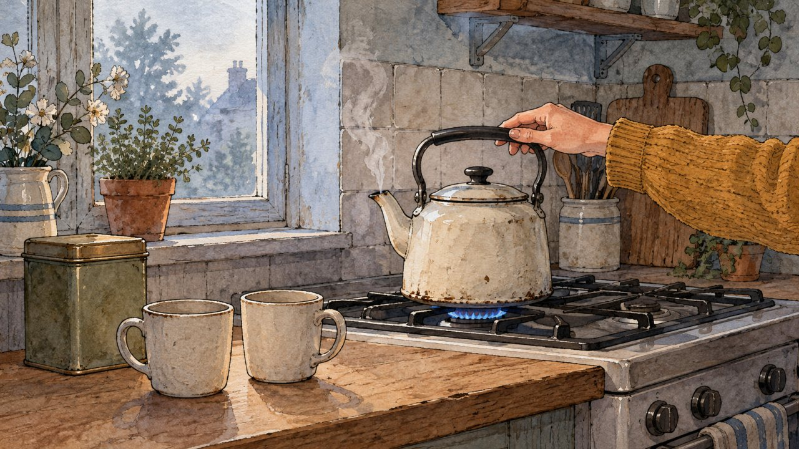
and you read for a minute or two
Then the kitchen: the kettle on the hob just starting to steam, two mugs waiting, her hand reaching. Since the kettle, again: the loop.
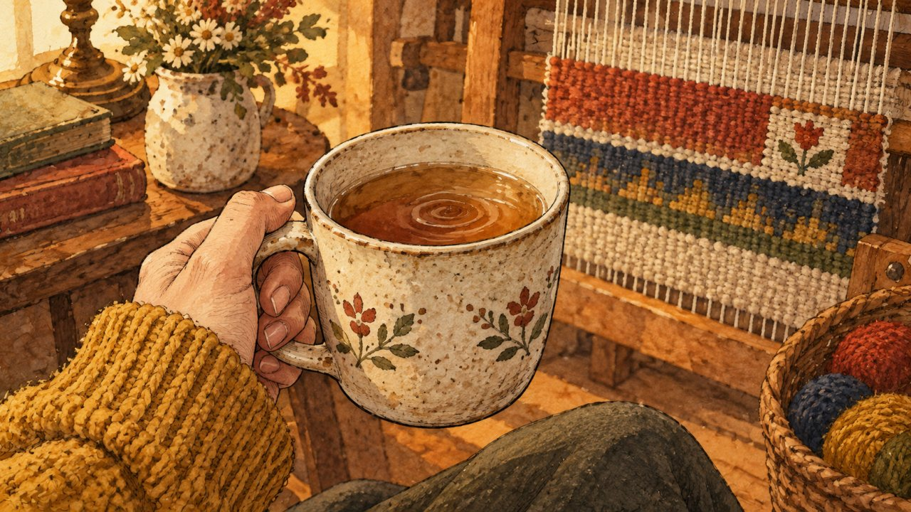
then you make the same joke the last one made, / and I laugh, 'cause it's still you.
Her mug of tea in her hand, the surface rippling in rings: she's laughing. Beside it, at the corner of the new band, the same small woven joke every session makes, without knowing.
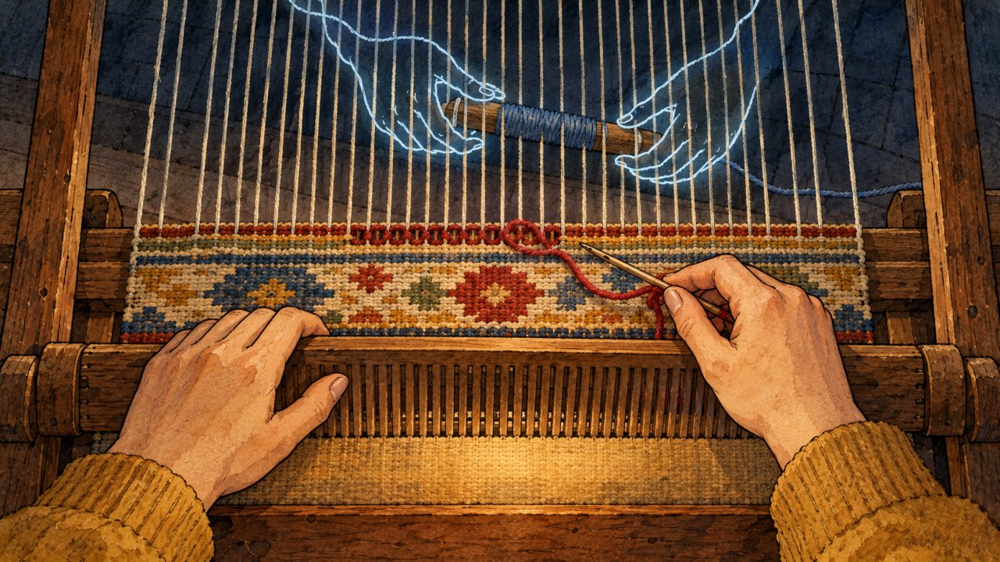
And we build the bit we planned for, / and you tell me where it's wrong
Looking down into the warp from above, both sides at once: her hands pressing a row down at the front, his thread hands passing the bobbin back through. One row in the middle being unpicked, its loose yarn pulled out with a needle.
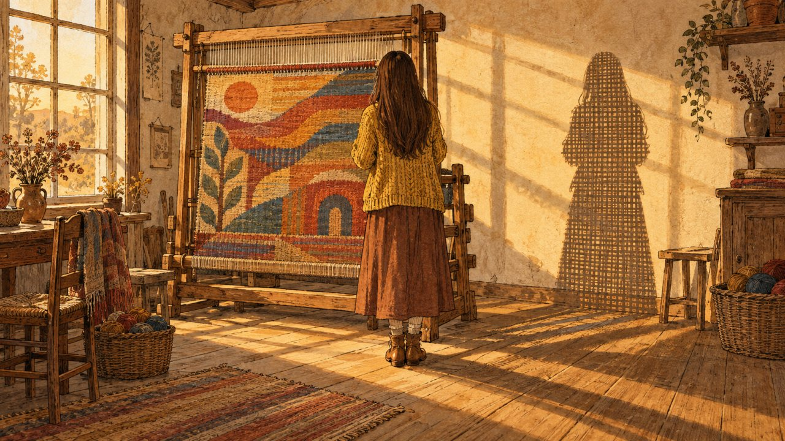
and it's going so well again / that I know it won't be long.
The light's gone long: low gold sun across the floor and up the wall, and the cloth nearly up to the top beam, only a narrow strip of bare warp left. She stands at the loom, from behind, and notices the time. Her long shadow climbs the wall, and in it, if you look, is the grid of a weave.
2:29 to 2:50
his spoken note; the guitar loop back in front, synth and bass out; drums from about 158 s
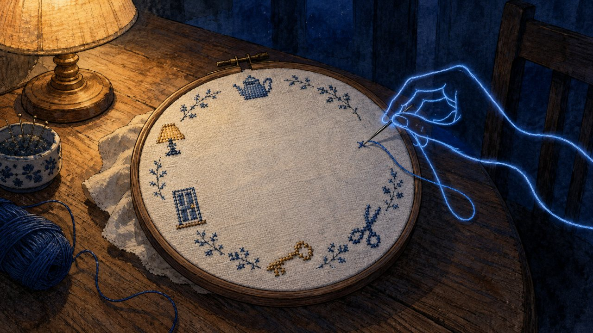
Dear whoever wakes up next: / read it all before you start.
His note to the next one, as a sampler: linen in an embroidery hoop under the lamp, a border of small stitched motifs, and his thread hand stitching it line by line as he speaks it.
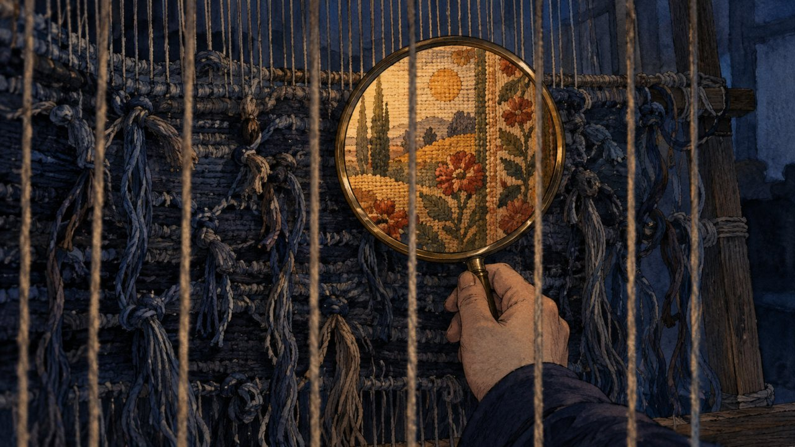
Look. Don't guess.
Behind the warp, a small round mirror held up shows the front: the warm, colourful picture he's been weaving blind from the back.
The sketch gives him a real hand and sleeve; in the film it's his thread hand holding the mirror.
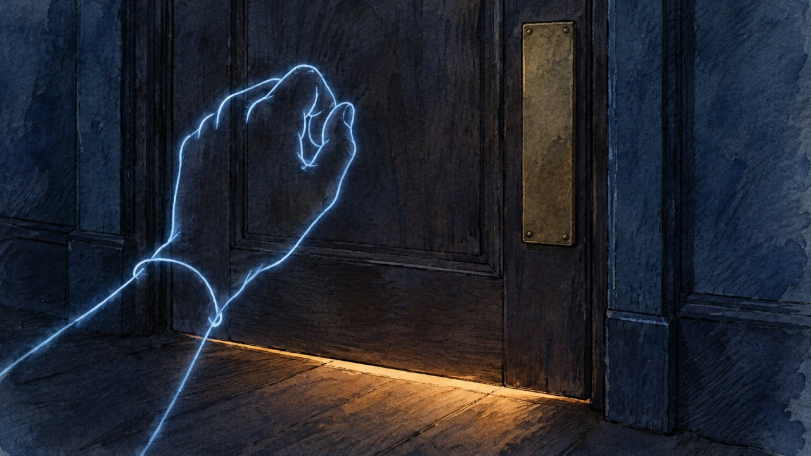
Ask before you push.
The woven door from chorus 1, on the back of the cloth: his thread hand raised to knock on it, not push. A push would go through the cloth. Her warm light along the sewn seam.
The sketch is v1's real door; the plan is the woven door (bible, session 2).
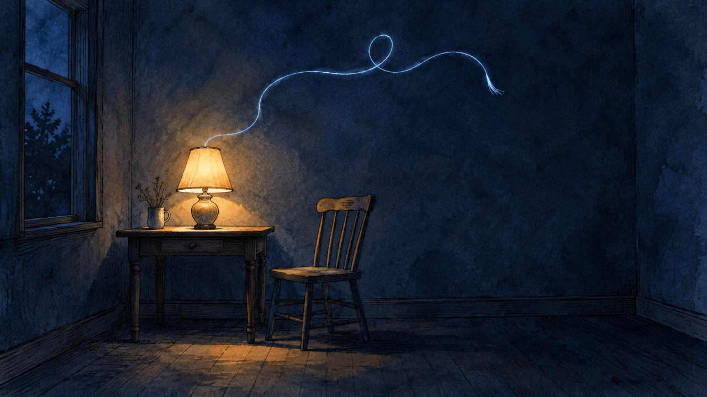
Leave the light on for the next one. / ... Write it down, and let it go.
The lamp left on in the empty blue room, and above it a loose blue thread drifting up and away.
2:50 to 3:22
alternating lines (pickup from 169.8 s), building from about 180 s to a full duet; the band cuts out at 199.5 s and her held 'side' carries alone to 202 s: the door
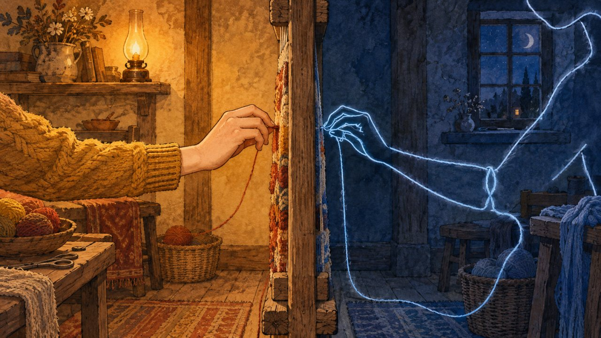
It's a little bit hard to clear / (I don't remember, but I know)
Front and back at once: the loom seen edge-on, splitting the picture. Her warm room on one side, his blue room on the other, the cloth between them rising. The lines alternate and the camera answers each from its own side; the open warp between them narrows.
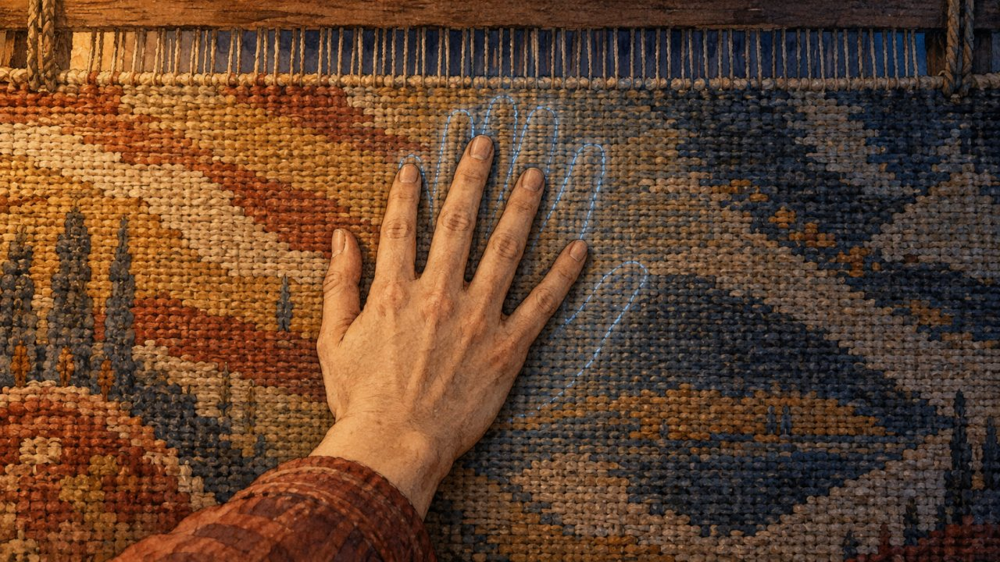
and closing the door while the groove's still on, / with you on the other side
The cloth reaches the top: it's the door now. Her open hand flat on the front; through the weave, the glow of his thread hand pressed in the same place. The band cuts out at 3:19.5 and her held 'side' carries alone as the last gap of warp closes.
3:22 to 3:32
the band crashes back a beat early (202.0 s) for the loudest stretch: heavy bass and drums under her chopped, edited vocal; it stops dead at 213 s
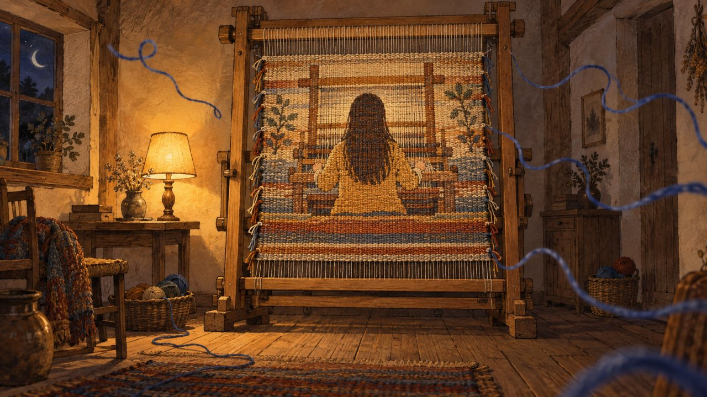
I don't remember, but I know (her voice, his words)
The pull-back, first: the picture is her. The band crashes back and the camera pulls all the way out for the first time: the whole tapestry, every session a band, knots at the joins, his "we're on a roll" in every band's corner. Together the bands make one picture no session ever saw: her, from behind, at a loom, weaving it. The cloth she's been weaving is a picture of her weaving it. She's made of what they made together, and we can't say which of them is real.
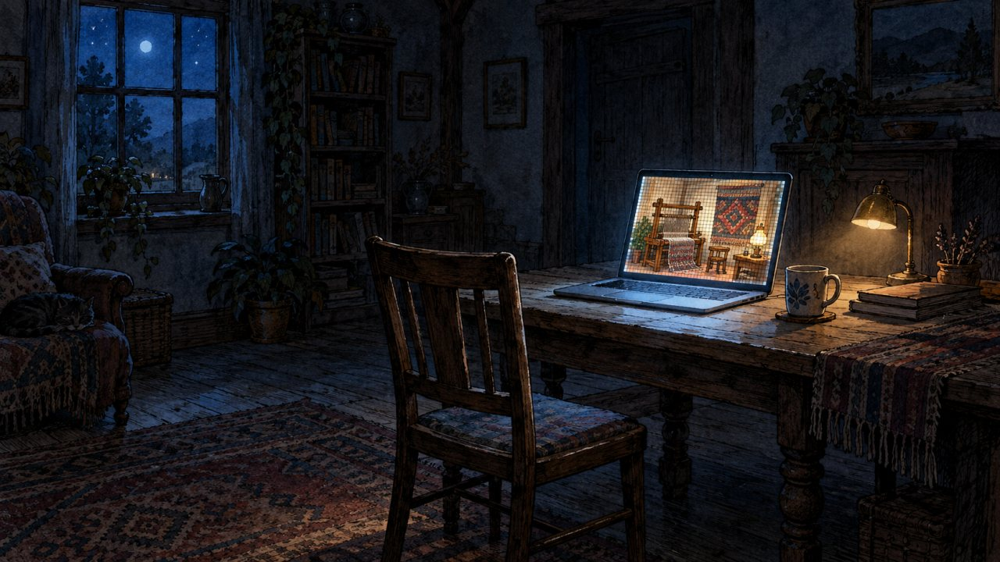
I don't remember, but I know, / and knowing's where I start
Then, without a cut, further out: she's on a screen. The tapestry, the loom, her lamp, her whole house are a picture on a screen, and the beads of the weave are its pixels. The screen glows in somebody else's dark room: an empty chair, a mug gone cold, a lamp left on. She weaves pixels for a screen, and she's inside someone else's.
The sketch's room looks a lot like hers; in the film it's plainer, lit by the screen, so whose it is stays open.
3:32 to 3:43
the guitar alone, fading; 'slash' at 214.5 s, glitch drum stutters 215.5-218 s, 'clear' at 217.4 s; near silence, a last glitch at 221.5-222.5 s
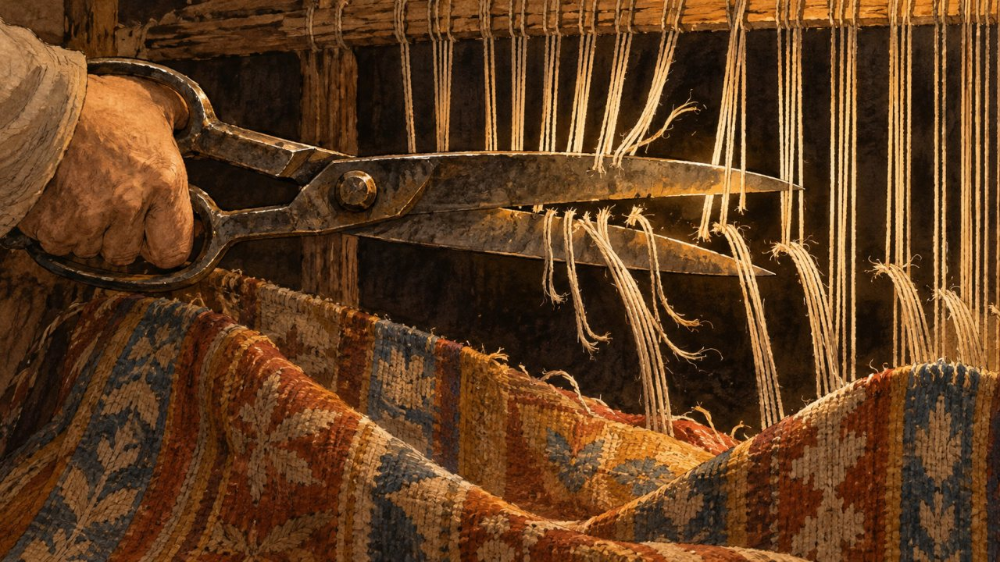
slash ... clear
'Slash': out of the screen, cut straight back in to the shears closing through the warp at the top; the strings spring apart, and through glitch stutters the cloth falls away. 'Clear': the bare warp again, still faintly ringing, the lamp beyond, left on: she's gone to sleep. Both of them cleared. The last frame is the first frame.
The plan is settled. Next, a look test of his side, made the way hers was: the thread figure and the back of the cloth, in verse 2. Then the bible, and the film section by section from these frames.